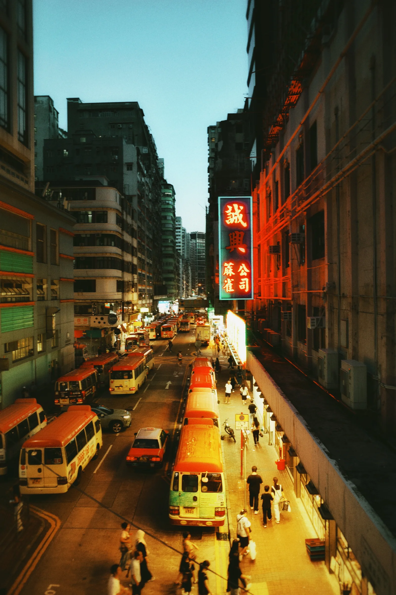
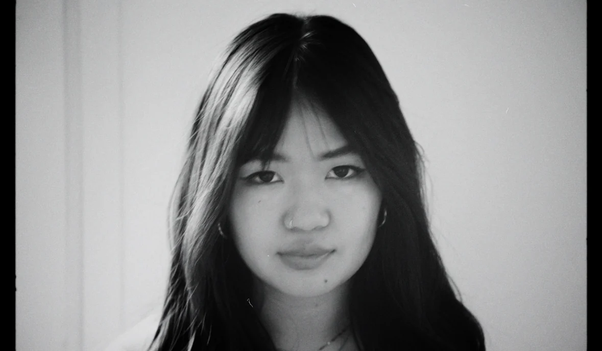
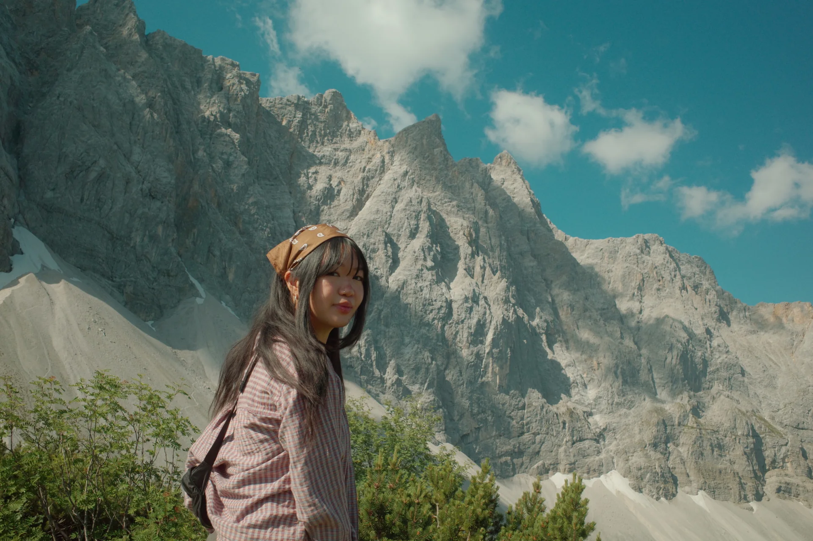

Photography · moving image · digital practice
NELLI SPACE
A visual notebook about places, light, movement and the small details that make a scene stay with you.

00—01
Drawn to the moment when a place becomes a feeling—sun on stone, a face through glass, a street switching on for the night.
Images collected between arrival and departure. Some are quiet, some are loud. All begin with looking.
01 / Selected work
Five ways of looking
Street · outdoor · wedding · band · portrait


“The city turns cinematic just before the light disappears.”
02 / Expanded practice
Beyond the still image
Other rooms in the same house.


03 / About
A little
closer.
I’m Nelli, a visual maker based in Vienna. I work across photography, moving image, code and research—following whatever form helps an idea feel most alive.
My practice begins with attention: the way light changes a street, how a person holds themselves for half a second, or how a landscape alters our sense of scale. Nelli Space is where those observations meet—part portfolio, part open notebook.
Currently based in Vienna.
Available for thoughtful collaborations and visual commissions.
04 / Contact
Have somewhere
to go?
For collaborations, commissions, research conversations and interesting detours.